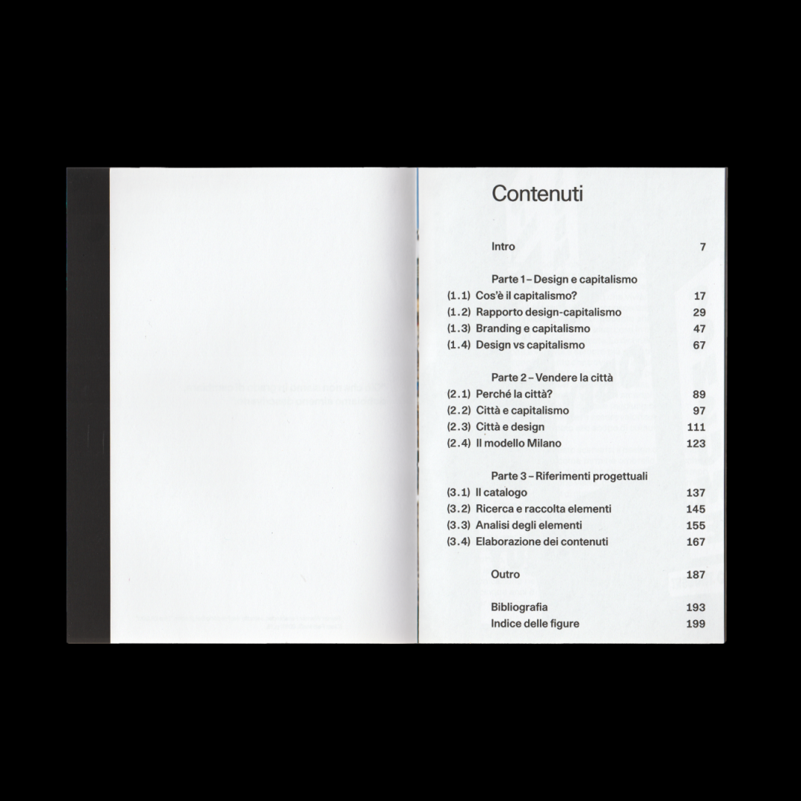

04
Vendere la città
[2024-25] [MA Thesis]
The thesis aims to question the design-capitalism relationship
through a historical-bibliographical research on the subject that considers several
generations of designers: from William Morris, through the “First Things First Manifesto”
and the “Adbusters” movement, to the present days. From this, the thesis develops a vertical
exploration of the theme of the city to investigate the design-capitalism relationship through
one particular manifestation of it: the phenomenon of “selling the city”
↗ Read Here
